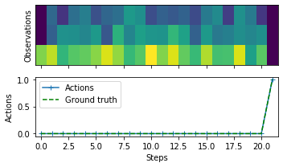

Keras example of supervised learning a NeuroGym task¶

NeuroGym is a comprehensive toolkit that allows training any network model on many established neuroscience tasks using Reinforcement Learning techniques. It includes working memory tasks, value-based decision tasks and context-dependent perceptual categorization tasks.
In this notebook we first show how to install the relevant toolbox.
We then show how to access the available tasks and their relevant information.
Finally we train an LSTM network on the Random Dots Motion task using standard supervised learning techniques (with Keras), and plot the results.
Installation when used on Google Colab¶
[ ]:
%tensorflow_version 1.x
# Install gym
! pip install gym
# Install neurogym
! git clone https://github.com/gyyang/neurogym.git
%cd neurogym/
! pip install -e .
Task, network, and training¶
[1]:
import warnings
import numpy as np
import neurogym as ngym
from tensorflow.keras.models import Model
from tensorflow.keras.layers import Dense, LSTM, TimeDistributed, Input
warnings.filterwarnings('ignore')
warnings.filterwarnings('default')
# Environment
task = 'PerceptualDecisionMaking-v0'
kwargs = {'dt': 100}
seq_len = 100
# Make supervised dataset
dataset = ngym.Dataset(task, env_kwargs=kwargs, batch_size=16,
seq_len=seq_len)
env = dataset.env
obs_size = env.observation_space.shape[0]
act_size = env.action_space.n
# Model
num_h = 64
# from https://www.tensorflow.org/guide/keras/rnn
xin = Input(batch_shape=(None, None, obs_size), dtype='float32')
seq = LSTM(num_h, return_sequences=True, time_major=True)(xin)
mlp = TimeDistributed(Dense(act_size, activation='softmax'))(seq)
model = Model(inputs=xin, outputs=mlp)
model.summary()
model.compile(optimizer='Adam', loss='sparse_categorical_crossentropy',
metrics=['accuracy'])
# Train network
steps_per_epoch = 2000
data_generator = (dataset() for i in range(steps_per_epoch))
history = model.fit(data_generator, steps_per_epoch=steps_per_epoch)
/Users/gryang/tf1/lib/python3.7/site-packages/tensorflow/python/framework/dtypes.py:516: FutureWarning: Passing (type, 1) or '1type' as a synonym of type is deprecated; in a future version of numpy, it will be understood as (type, (1,)) / '(1,)type'.
_np_qint8 = np.dtype([("qint8", np.int8, 1)])
/Users/gryang/tf1/lib/python3.7/site-packages/tensorflow/python/framework/dtypes.py:517: FutureWarning: Passing (type, 1) or '1type' as a synonym of type is deprecated; in a future version of numpy, it will be understood as (type, (1,)) / '(1,)type'.
_np_quint8 = np.dtype([("quint8", np.uint8, 1)])
/Users/gryang/tf1/lib/python3.7/site-packages/tensorflow/python/framework/dtypes.py:518: FutureWarning: Passing (type, 1) or '1type' as a synonym of type is deprecated; in a future version of numpy, it will be understood as (type, (1,)) / '(1,)type'.
_np_qint16 = np.dtype([("qint16", np.int16, 1)])
/Users/gryang/tf1/lib/python3.7/site-packages/tensorflow/python/framework/dtypes.py:519: FutureWarning: Passing (type, 1) or '1type' as a synonym of type is deprecated; in a future version of numpy, it will be understood as (type, (1,)) / '(1,)type'.
_np_quint16 = np.dtype([("quint16", np.uint16, 1)])
/Users/gryang/tf1/lib/python3.7/site-packages/tensorflow/python/framework/dtypes.py:520: FutureWarning: Passing (type, 1) or '1type' as a synonym of type is deprecated; in a future version of numpy, it will be understood as (type, (1,)) / '(1,)type'.
_np_qint32 = np.dtype([("qint32", np.int32, 1)])
/Users/gryang/tf1/lib/python3.7/site-packages/tensorflow/python/framework/dtypes.py:525: FutureWarning: Passing (type, 1) or '1type' as a synonym of type is deprecated; in a future version of numpy, it will be understood as (type, (1,)) / '(1,)type'.
np_resource = np.dtype([("resource", np.ubyte, 1)])
WARNING:tensorflow:From /Users/gryang/tf1/lib/python3.7/site-packages/tensorflow/python/ops/init_ops.py:1251: calling VarianceScaling.__init__ (from tensorflow.python.ops.init_ops) with dtype is deprecated and will be removed in a future version.
Instructions for updating:
Call initializer instance with the dtype argument instead of passing it to the constructor
/Users/gryang/tf1/lib/python3.7/site-packages/tensorboard/compat/tensorflow_stub/dtypes.py:541: FutureWarning: Passing (type, 1) or '1type' as a synonym of type is deprecated; in a future version of numpy, it will be understood as (type, (1,)) / '(1,)type'.
_np_qint8 = np.dtype([("qint8", np.int8, 1)])
/Users/gryang/tf1/lib/python3.7/site-packages/tensorboard/compat/tensorflow_stub/dtypes.py:542: FutureWarning: Passing (type, 1) or '1type' as a synonym of type is deprecated; in a future version of numpy, it will be understood as (type, (1,)) / '(1,)type'.
_np_quint8 = np.dtype([("quint8", np.uint8, 1)])
/Users/gryang/tf1/lib/python3.7/site-packages/tensorboard/compat/tensorflow_stub/dtypes.py:543: FutureWarning: Passing (type, 1) or '1type' as a synonym of type is deprecated; in a future version of numpy, it will be understood as (type, (1,)) / '(1,)type'.
_np_qint16 = np.dtype([("qint16", np.int16, 1)])
/Users/gryang/tf1/lib/python3.7/site-packages/tensorboard/compat/tensorflow_stub/dtypes.py:544: FutureWarning: Passing (type, 1) or '1type' as a synonym of type is deprecated; in a future version of numpy, it will be understood as (type, (1,)) / '(1,)type'.
_np_quint16 = np.dtype([("quint16", np.uint16, 1)])
/Users/gryang/tf1/lib/python3.7/site-packages/tensorboard/compat/tensorflow_stub/dtypes.py:545: FutureWarning: Passing (type, 1) or '1type' as a synonym of type is deprecated; in a future version of numpy, it will be understood as (type, (1,)) / '(1,)type'.
_np_qint32 = np.dtype([("qint32", np.int32, 1)])
/Users/gryang/tf1/lib/python3.7/site-packages/tensorboard/compat/tensorflow_stub/dtypes.py:550: FutureWarning: Passing (type, 1) or '1type' as a synonym of type is deprecated; in a future version of numpy, it will be understood as (type, (1,)) / '(1,)type'.
np_resource = np.dtype([("resource", np.ubyte, 1)])
/Users/gryang/Dropbox/Code/MyPython/neurogym/neurogym/core.py:253: UserWarning: Warning: Time for period fixation 100.000000 lasts only one timestep. Agents will not have time to respond (e.g. make a choice) on time.
' time to respond (e.g. make a choice) on time.')
/Users/gryang/Dropbox/Code/MyPython/neurogym/neurogym/core.py:253: UserWarning: Warning: Time for period decision 100.000000 lasts only one timestep. Agents will not have time to respond (e.g. make a choice) on time.
' time to respond (e.g. make a choice) on time.')
Model: "model"
_________________________________________________________________
Layer (type) Output Shape Param #
=================================================================
input_1 (InputLayer) [(None, None, 3)] 0
_________________________________________________________________
lstm (LSTM) (None, None, 64) 17408
_________________________________________________________________
time_distributed (TimeDistri (None, None, 3) 195
=================================================================
Total params: 17,603
Trainable params: 17,603
Non-trainable params: 0
_________________________________________________________________
WARNING:tensorflow:From /Users/gryang/tf1/lib/python3.7/site-packages/tensorflow/python/ops/math_grad.py:1250: add_dispatch_support.<locals>.wrapper (from tensorflow.python.ops.array_ops) is deprecated and will be removed in a future version.
Instructions for updating:
Use tf.where in 2.0, which has the same broadcast rule as np.where
7/2000 [..............................] - ETA: 5:35 - loss: 1.0581 - acc: 0.4196
/Users/gryang/Dropbox/Code/MyPython/neurogym/neurogym/core.py:253: UserWarning: Warning: Time for period fixation 100.000000 lasts only one timestep. Agents will not have time to respond (e.g. make a choice) on time.
' time to respond (e.g. make a choice) on time.')
/Users/gryang/Dropbox/Code/MyPython/neurogym/neurogym/core.py:253: UserWarning: Warning: Time for period decision 100.000000 lasts only one timestep. Agents will not have time to respond (e.g. make a choice) on time.
' time to respond (e.g. make a choice) on time.')
2000/2000 [==============================] - 106s 53ms/step - loss: 0.0569 - acc: 0.9835
Analysis¶
[2]:
# TODO: Make this into a function in neurogym
perf = 0
num_trial = 200
for i in range(num_trial):
env.new_trial()
obs, gt = env.obs, env.gt
obs = obs[:, np.newaxis, :]
action_pred = model.predict(obs)
action_pred = np.argmax(action_pred, axis=-1)
perf += gt[-1] == action_pred[-1, 0]
perf /= num_trial
print(perf)
0.895
[3]:
_ = ngym.utils.plotting.fig_(obs[0], action_pred[0], gt)

[ ]: